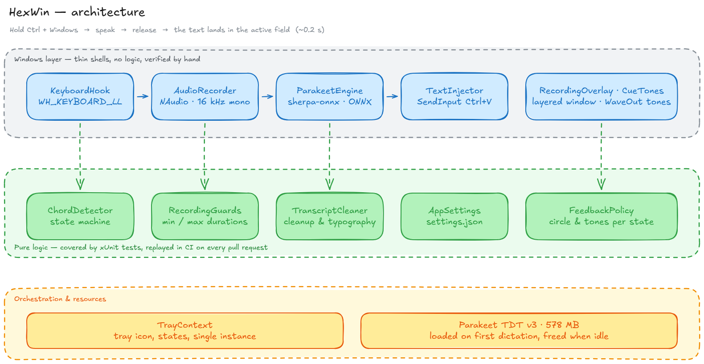

Local voice dictation for Windows
Hold the hotkey, speak, release. The text lands at your cursor — in any application, without ever leaving your machine.
Ctrl + ⊞ Win → speak → release
Measured on a Dell Pro Max 16 (Core Ultra 7 255H), on CPU — no graphics card involved.
| Speech length | Wait after release |
|---|---|
| 0.6 s | 0.05 s |
| 1.6 s | 0.08 s |
| 5 s | 0.19 s |
| 40 s | 1.58 s |
A one-sentence dictation — the normal case — is inserted faster than you can move your hand back to the keyboard.
Whisper was tried first, and dropped after measurement. It is an autoregressive encoder-decoder, so it pays a fixed cost of about 1.4 s per transcription however short the audio is. On a single sentence, that cost is paid in full.
Parakeet TDT v3 is a transducer and has no such bottleneck. Same recordings, Parakeet on CPU against Whisper on GPU, five-second clip: 2.29 s → 0.19 s.
It is the same engine Hex uses on macOS, and it recognises the spoken language on its own among 25 European languages — there is no language setting to get wrong.
Download the archive from the latest release, unzip it, then in PowerShell:
.\get-model.ps1 # about 480 MB, once
.\HexWin.exeNothing else to install — not even .NET, which is bundled inside the executable. A tray icon shows the state: grey while the model loads, blue when ready, red while recording, orange while transcribing.
Two layers, kept apart on purpose. The Win32 shells — keyboard hook, audio capture, engine, text injection — wire up system APIs and decide nothing. Every decision lives in a pure layer tested without Windows: chord detection, keyboard auto-repeat, keys released out of order, a key left stuck after a session lock, a second dictation triggered while one is still running.
